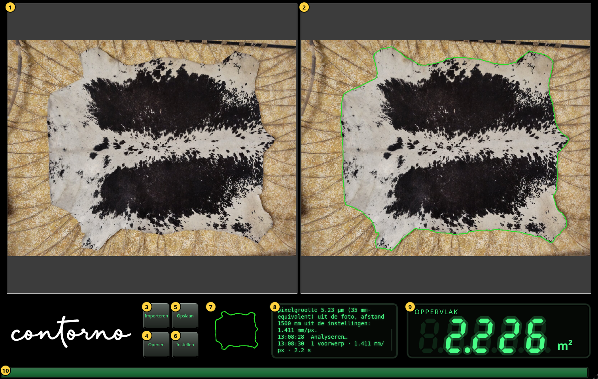
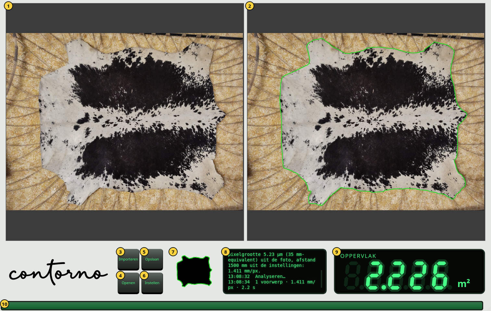

Aan de slag
Het venster, zijn onderdelen, zoomen en het lichte thema.
Open Contorno Indicator. Het venster vult het scherm. Vóór de eerste foto toont de uitlezing streepjes en zegt het meldingenpaneel Importeer een foto van de voorwerpen op de tafel.


- De foto zoals hij genomen is, onaangeroerd.
- Dezelfde foto met de gevonden contour, in groen. Binnen deze contour wordt het oppervlak gemeten.
- Importeren — een foto van het voorwerp op de tafel kiezen. De analyse begint meteen.
- Openen — een opgeslagen inspectie weer tonen. Zie Inspecties opslaan en openen.
- Opslaan — foto, camera, contour en oppervlak in één zip-bestand bewaren.
- Instellen — de camera, de taal en het thema. Zie Instellen.
- Het masker: het voorwerp zoals de analyse het ziet, zwart, met zijn contour in groen.
- Het meldingenpaneel. Elke regel begint met zijn tijd. Het zegt wat geïmporteerd is, waar de schaal vandaan komt, hoeveel voorwerpen gevonden zijn en hoe lang het duurde.
- De uitlezing: het oppervlak binnen de contour.
- De voortgangsbalk. Hij loopt terwijl de foto geanalyseerd wordt en blijft een seconde vol als het resultaat er is.
Zoomen en schuiven
Draai het muiswiel boven een foto om bij de aanwijzer in of uit te zoomen. Sleep om te schuiven. Beide foto's zoomen en schuiven samen, zodat de contour rechts altijd boven dezelfde plek ligt als de foto links. Een nieuwe foto wordt weer helemaal getoond.
De uitlezing
De uitlezing toont het oppervlak in cm² onder 0.1 m² (één decimaal, bijvoorbeeld 125.4 cm²) en in m² vanaf 0.1 m² (drie decimalen, bijvoorbeeld 2.226 m²). Komt er een nieuwe waarde, dan tellen de cijfers ernaartoe vanaf de vorige. Getallen worden met een punt geschreven, zoals in het programma.
- Streepjes: nog geen foto, of de analyse is mislukt. Het meldingenpaneel zegt waarom.
- Gedimde cijfers: de waarde van de vorige foto terwijl de nieuwe geanalyseerd wordt. Een gedimd getal is nooit het huidige resultaat.
- Heldere cijfers: het oppervlak binnen de contour die rechts getoond wordt.
Het lichte thema
Het venster is standaard zwart. De thematoets in Instellen maakt de panelen lichtgrijs met een zwart woordmerk; de foto's veranderen niet.

